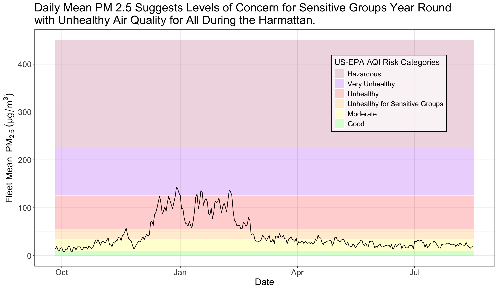
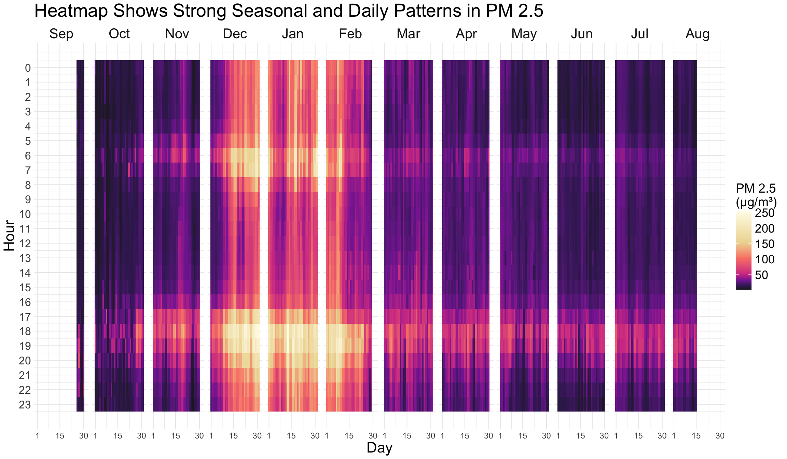
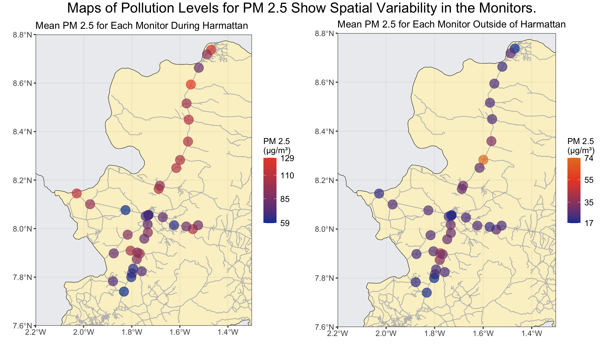

In 2023, our team set up a network of 40 low-cost air pollution monitors across Ghana’s Bono East region—spanning farming communities and the city of Kintampo (population ~111,000), where our Ghanaian research partners are based. While we ran into the typical hurdles that come with rural data collection, such as patchy network connectivity and occasional data gaps, our initial results give us some valuable insights into the area’s air quality.
The fleet of monitors recorded an average daily fine particulate matter (PM 2.5) concentration of about 49 μg/m³—a level higher than the World Health Organization’s primary PM 2.5 target of 5 μg/m3 and interim target of 35 μg/m3. We also saw clear daily spikes in pollution during cooking hours (morning and evening) and a large jump in overall pollution during the Harmattan season, a period roughly from late-November to mid-March when a cool dry wind blows dust from the Sahara over much of West Africa.
Elevated levels of particulate matter can significantly influence both maternal health and early childhood development [1][2]. The measurements shared in this report highlight the scale of this issue in Ghana’s rural farming regions and smaller urban centers, informing future epidemiological studies of air pollution risk.
Monitors
For data collection, we used QuantAQ’s ModulairPM and Modulair devices. Before installing them in each community, we colocated the monitors at the Kintampo Health Research Center (KHRC) to cross-check and adjust for any systematic biases between the units. These initial calibrations ensure consistent, high-quality data across all 40 locations. After the colocation period, we deployed the monitors to their respective communities. The maps below illustrates their distribution.
Code
# Define the bounding box coordinatesbbox_coords <-matrix(c(-2.2, 7.6, -2.2, 8.8, -1.3, 8.8, -1.3, 7.6, -2.2, 7.6), ncol =2, byrow =TRUE)bbox_polygon <-st_polygon(list(bbox_coords))bbox_sf <-st_sfc(bbox_polygon, crs =st_crs(4326))# Plot the map with the bounding boxghana_full <-ggplot() +# Add Ghana regionsgeom_sf(data = regions, fill =ifelse(regions$region =="Bono East", "#f5e493", "#dadbe0"), color ="black", alpha =0.5) +# Add monitor points with transparencygeom_sf(data = monitor_points, aes(geometry = geometry), color ="red", alpha =0.5, size =2) +# Add bounding boxgeom_sf(data = bbox_sf, fill =NA, color ="blue", lwd =0.5, linetype ="solid") +# Add Ghana country boundarygeom_sf(data = country, fill =NA, color ="black", size =1) +#labs(title = "Monitor Locations in Ghana") +theme_bw() +theme(axis.text =element_text(size =11), # Increase axis text sizeaxis.ticks =element_line(size =1), # Increase tick mark sizeplot.title =element_text(size =16) )zoomed_map <-ggplot() +# Add Ghana regions within the bounding boxgeom_sf(data = regions, fill =ifelse(regions$region =="Bono East", "#f5e493", "#dadbe0"), color ="black", alpha =0.5) +# Add monitor points with transparency within the bounding boxgeom_sf(data = monitor_points, aes(geometry = geometry, color = monitor_type), alpha =0.5, size =5) +# Add Kintampo markergeom_sf(data = kintampo_sf, aes(geometry = geometry), shape =20, size =3, color ="black") +# Add Dwenewoho markergeom_sf(data = dwenewoho_sf, aes(geometry = geometry), shape =20, size =3, color ="black") +# Add new longoro markergeom_sf(data = new_longoro_sf, aes(geometry = geometry), shape =20, size =3, color ="black") +# Add apesika markergeom_sf(data = apesika_sf, aes(geometry = geometry), shape =20, size =3, color ="black") +# Add kurawura akura markergeom_sf(data = kurawura_akura_sf, aes(geometry = geometry), shape =20, size =3, color ="black") +# Add Kintamp annotation textannotate("text", x =-1.73, y =8.10, label ="Kintampo", color ="black", size =5) +# Add Dwenewoho annotation textannotate("text", x =-1.69, y =7.74, label ="Dwenewoho", color ="black", size =5) +# Add new longoro annotation textannotate("text", x =-2.047, y =8.214, label ="New Longoro", color ="black", size =5) +# Add apesika annotation textannotate("text", x =-1.459, y =7.96, label ="Apesika", color ="black", size =5) +# Add atta akura annotation textannotate("text", x =-1.65, y =8.75, label ="Kurawura Akura", color ="black", size =5) +# Zoom in to the bounding boxcoord_sf(xlim =c(-2.2, -1.3), ylim =c(7.6, 8.8), expand =FALSE) +labs(x ="", y ="",color ="Monitor Type") +theme_bw() +theme(axis.text =element_text(size =11), # Increase axis text sizeaxis.ticks =element_line(size =0.5), # Increase tick mark sizeplot.title =element_text(size =16), # Increase title sizelegend.text =element_text(size =10), # Increase legend text sizelegend.title =element_text(size =12) # Increase legend title size )# Create a joint titletitle <-textGrob("Monitor Locations in Ghana", gp =gpar(fontsize =20))# Arrange plots with titlegrid.arrange(arrangeGrob(ghana_full, zoomed_map, ncol =2), # Arrange plotstop = title # Add title at the top)
Air Quality Index (AQI) Context
Before diving into the results, I wanted to provide some context on air quality measurements. The United States Environmental Protection Agency (U.S. EPA) Air Quality Index (AQI) is a scale that measures pollution levels in the air. The scale is divided into six categories, with each associated with a different color and level of concern. While the final score is calculated using five major air pollutants—particulate matter, ozone, carbon monoxide, sulfur dioxide, and nitrogen dioxide—this analysis will focus on PM 2.5, fine particulate matter with a diameter of 2.5 micrometers or less.
The table below shows the EPA’s cutoffs [3] for each health concern category, including both the standard AQI values (the numbers commonly seen in air quality reports and weather apps) and the specific PM 2.5 concentration ranges that contribute to the index.
AQI Category and Index Value
Corresponding fine particle (PM 2.5) Measurement (µg/m³)
Good (0 – 50)
0.0 to 9.0
Moderate (51 – 100)
9.1 to 35.4
Unhealthy for Sensitive Groups (101 – 150)
35.5 to 55.4
Unhealthy (151 – 200)
55.5 to 125.4
Very Unhealthy (201 – 300)
125.5 to 225.4
Hazardous (301+)
225.5+
Results
PM 2.5 Concentrations Over Time
Code
# Define AQI levels with ordered factorsaqi_levels <-data.frame(ymin =c(0, 9.1, 35.5, 55.5, 125.5, 225.5),ymax =c(9, 35.4, 55.4, 125.4, 225.4, 450),fill =factor(c("Good", "Moderate", "Unhealthy for Sensitive Groups", "Unhealthy", "Very Unhealthy", "Hazardous"), levels =c("Good", "Moderate", "Unhealthy for Sensitive Groups", "Unhealthy", "Very Unhealthy", "Hazardous")),color =c("green", "yellow", "orange", "red", "purple", "maroon"))# Plot with legend inside the graphdaily_pollutants_long %>%filter(pollutant =="Mean PM 2.5") %>%ggplot(aes(x = date, y = measurement)) +# Add background rectangles for AQI levelsgeom_rect(data = aqi_levels, aes(xmin =min(daily_pollutants_long$date), xmax =max(daily_pollutants_long$date), ymin = ymin, ymax = ymax, fill = fill), color =NA, alpha =0.2, inherit.aes =FALSE) +# Add the PM 2.5 linegeom_line(color ="black") +theme_bw() +labs(title ="Daily Mean PM 2.5 Suggests Levels of Concern for Sensitive Groups Year Round \nwith Unhealthy Air Quality for All During the Harmattan.",x ="Date",y =bquote("Fleet Mean "~ PM[2.5] ~ (µg/m^3)),fill ="US-EPA AQI Risk Categories") +# Add legend title for the AQI levelstheme(plot.title =element_text(size=20), # set title size axis.title =element_text(size =16), # Increase axis titles sizeaxis.text =element_text(size =14), # Increase axis labels sizestrip.text =element_text(size =14), # Increase facet group text sizelegend.position =c(0.77, 0.73), # Position legend inside the graph (top right)legend.background =element_rect(fill =rgb(1, 1, 1, alpha =0.7), color ="black"),legend.title =element_text(size =14), # Adjust legend title sizelegend.text =element_text(size =12) # Adjust legend text size ) +scale_fill_manual(values = aqi_levels$color) +guides(fill =guide_legend(reverse =TRUE)) # Reverse the order of the legend

The figure above shows that PM 2.5 levels often exceed the ‘good’ to ‘moderate’ AQI range, particularly from December through February—roughly the Harmattan season.
We see similar trends for other sizes of particulate matter, as illustrated in the three-panel plot below. The first panel highlights PM1 concentrations (mean 37 µg/m³), the second panel shows PM 2.5 (mean 43.2 µg/m³), and the third panel displays PM10 (mean 101 µg/m³). All three exhibit noticeable peaks during the dry, dusty Harmattan months, suggesting that the same sources (such as windblown dust) drive increases across all particle sizes.
pm25_community_hourly <- pm25_community_hourly %>%mutate(date =ymd(date)) # Use lubridate to ensure date conversionheat_map_data <- pm25_community_hourly %>%group_by(date, hour) %>%summarize(mean_pm25 =mean(mean_pm25, na.rm =TRUE), .groups ='drop') %>%ungroup() %>%mutate(day =day(date),month =factor(format(date, "%b"), levels =c("Sep", "Oct", "Nov", "Dec", "Jan", "Feb", "Mar", "Apr", "May", "Jun", "Jul", "Aug")),year =year(date)) %>%mutate(log_mean_pm25 =log(mean_pm25))ggplot(heat_map_data, aes(day, hour, fill = mean_pm25)) +geom_tile(color =NA, size =0) +scale_fill_gradientn(colors =c("#221f26", "#3f2363", "#872CA2", "#D44292", "#F98477", "#EDD9A1", "#fffceb"), # Specify your custom colorsvalues = scales::rescale(c(0, 5, 12, 20, 40, 60, 100)), # Set breaks; adjust these values based on your data rangename ="PM 2.5 \n(µg/m³)" ) +facet_grid(~month) +scale_y_continuous(trans ="reverse", breaks =unique(heat_map_data$hour)) +scale_x_continuous(breaks =c(1, 15, 30)) +theme_minimal(base_size =8) +labs(title ="Heatmap Shows Strong Seasonal and Daily Patterns in PM 2.5",x ="Day",y ="Hour") +theme(legend.position ="right",plot.title =element_text(size =20, hjust =0),axis.text.y =element_text(size =12),strip.background =element_rect(colour ="white"),strip.text =element_text(size =15), # Increase facet group text sizeaxis.ticks =element_blank(),axis.text =element_text(size =9),legend.title =element_text(size =14),legend.text =element_text(size =13),axis.title.y =element_text(size =16),axis.title.x =element_text(size =16),panel.background =element_blank())

The heatmap illustrates how both season and time of day affect PM 2.5 concentrations across all 40 monitors. During the Harmattan season (December–February), PM 2.5 levels stay elevated, peaking in the early morning (6–8 a.m.) and early evening (5–9 p.m.). These spikes likely coincide with cooking and other daily activities that generate or stir up particulate matter. As the Harmattan subsides around March, average PM levels drop, and remain lower into the late spring and early summer months.
Code
base_plot <- pm25_community_hourly %>%mutate(harmattan =ifelse(date >= harmattan_start & date <= harmattan_end, "Harmattan", "Not Harmattan")) %>%mutate(cooking_period =factor(case_when( hour >=16& hour <=19~"Evening Cooking Hours", #4-9pm hour >=5& hour <=8~"Morning Cooking Hours", #5-9am (hour <16| hour >19) & (hour <5| hour >8) & hour !=3~"Other Hours", hour ==3~"Control Hour" ), levels =c("Evening Cooking Hours", "Morning Cooking Hours", "Control Hour", "Other Hours")) ) %>%filter(!is.na(hour)) %>%ggplot(aes(x = harmattan, y = mean_pm25, fill = cooking_period)) +geom_boxplot() +theme_classic() +labs(y ="PM 2.5 Concentration", x ="Season",fill ="Cooking\nPeriod") +# Change legend title and add line breakstheme(legend.position ="right") +scale_fill_manual(values =c("Evening Cooking Hours"="goldenrod", "Morning Cooking Hours"="#7db569", "Control Hour"="#b672e0","Other Hours"="#52b3eb" ),labels =c("Evening Cooking Hours (4pm-8pm)", "Morning Cooking Hours (5am-9am)", "Control Hour (3am)", "Other Hours (Excluding Cooking \nand Control Hours)")) # Add line breaks in legend labelsbase_plot +geom_segment(aes(x =0.72, xend =0.90, y =515, yend =515), color ="black") +# Harmattan annotate("text", x =0.81, y =518, label ="***") +geom_segment(aes(x =0.91, xend =1.09, y =515, yend =515), color ="black") +# Harmattan annotate("text", x =1, y =518, label ="***") +geom_segment(aes(x =1.10, xend =1.28, y =515, yend =515), color ="black") +# Harmattan annotate("text", x =1.19, y =518, label ="**") +geom_segment(aes(x =0.72, xend =1.09, y =525, yend =525), color ="black") +# Harmattan annotate("text", x =0.9, y =529, label ="***") +geom_segment(aes(x =0.91, xend =1.27, y =536, yend =536), color ="black") +# Harmattanannotate("text", x =1.09, y =540, label ="***") +geom_segment(aes(x =0.72, xend =1.27, y =548, yend =548), color ="black") +# Harmattanannotate("text", x =1, y =552, label ="***") +geom_segment(aes(x =1.72, xend =1.90, y =360, yend =360), color ="black") +# Not Harmattan annotate("text", x =1.81, y =364, label ="***") +geom_segment(aes(x =1.91, xend =2.09, y =360, yend =360), color ="black") +# Not Harmattan annotate("text", x =2.0, y =364, label ="***") +geom_segment(aes(x =2.10, xend =2.28, y =360, yend =360), color ="black") +# Not Harmattan annotate("text", x =2.19, y =364, label ="***") +geom_segment(aes(x =1.72, xend =2.09, y =372, yend =372), color ="black") +# Not Harmattan annotate("text", x =1.9, y =376, label ="***") +geom_segment(aes(x =1.91, xend =2.28, y =384, yend =384), color ="black") +# Not Harmattan annotate("text", x =2.09, y =388, label ="***") +geom_segment(aes(x =1.72, xend =2.27, y =396, yend =396), color ="black") +# Not Harmattan annotate("text", x =2, y =400, label ="***") +geom_segment(aes(x =1, xend =2, y =590, yend =590), color ="black") +# Harmattan vs Not Harmattanannotate("text", x =1.5, y =600, label ="***") +labs(title ="Higher Ambient PM 2.5 Concentrations During Cooking Periods Persist Across Season",caption ="Comparisons and their significance are denoted by the horizontal lines: \n* indicates p <0.05, ** indicates p < 0.01, and *** indicates p < 0.001") +theme(plot.title =element_text(size =20),axis.text =element_text(size =13), # Increase axis text sizeaxis.ticks =element_line(size =0.7), # Increase tick mark sizelegend.text =element_text(size =12), # Increase legend text sizelegend.title =element_text(size =14), # Increase legend title sizeplot.caption =element_text(size =13),axis.title.x =element_text(size =15),axis.title.y =element_text(size =15), )
The boxplots above further examine the relationship between seasonal Harmattan, peak cooking times, and air pollution. For this analysis, Harmattan was defined from December 1st to March 1st, morning cooking hours between 5–9am, and evening cooking hours between 4–8pm, based on our research partners’ local knowledge of the region. As a comparison to the cooking hours, I looked at a control hour (3am) in the middle of the night as it should be completely unaffected by human behavior, as well as a group of ‘other hours’ that excluded the cooking hours and the control hour, leaving me with a total of 4 groups.
I utilized ANOVAs to test for differences in the time groupings for the entire data, and then for each season separately. The results were highly significant for each test, so I moved forward with Tukey’s HSD to further examine the differences in means for each group. Partially due to the large number of observations in the data (and thus small standard deviations), all differences between groups were highly significant.
Regarding seasonality, as expected, PM 2.5 concentration was higher (M = 84, SD = 60) on average during Harmattan months than non-Harmattan months (M = 26, SD = 24). During the Harmattan, evening cooking hours (M = 131, SD = 77) were associated with the highest pollution levels, followed by morning cooking hours (M = 95, SD = 64), with other hours (M = 74, SD = 48) and the control hour (M = 70, SD = 45) experiencing lower levels. The same order held outside of Harmattan, with evening cooking hours (M = 47, SD = 34) associated with the highest PM 2.5 concentration, then morning cooking hours (M = 25, SD = 19), then other hours (M = 21, SD = 19), and finally the control hour (M = 16, SD = 13).
Spatial Variability
Code
# DURING HARMATTAN ----#PM 2.5pm25_summary_harmattan <- pm25_corrected %>%filter(date >= harmattan_start & date < harmattan_end) %>%group_by(monitor) %>%summarise(mean_pm25 =mean(pm25, na.rm =TRUE),median_pm25 =median(pm25, na.rm =TRUE)) %>%right_join(monitor_points)harmattan_spatial_plot <-ggplot() +# Add Ghana regions within the bounding boxgeom_sf(data = regions, fill =ifelse(regions$region =="Bono East", "#f5e493", "#dadbe0"), color ="black", alpha =0.5) +# Add road datageom_sf(data = roads_filtered, color ="gray", size =0.3) +# Add roads data# Add monitor points with transparency within the bounding boxgeom_sf(data = pm25_summary_harmattan, aes(geometry = geometry, color = mean_pm25), alpha =0.7, size =6) +# Zoom in to the bounding boxcoord_sf(xlim =c(-2.2, -1.3), ylim =c(7.6, 8.8), expand =FALSE) +# Customizelabs(title ="Mean PM 2.5 for Each Monitor During Harmattan",x ="", y ="") +theme_bw() +scale_color_gradient(low ="#0540a1", high ="#eb4c2d",breaks =c(min(pm25_summary_harmattan$mean_pm25), 85, 110, max(pm25_summary_harmattan$mean_pm25)),labels =c(paste(round(min(pm25_summary_harmattan$mean_pm25),0)), "85", "110", paste(round(max(pm25_summary_harmattan$mean_pm25),0))),name ="PM 2.5 \n(µg/m³)") +theme(axis.text =element_text(size =11), # Increase axis text sizeaxis.ticks =element_line(size =0.7), # Increase tick mark sizeplot.title =element_text(size =14), # Increase plot title sizelegend.text =element_text(size =12), # Increase legend text sizelegend.title =element_text(size =12), # Increase legend title sizelegend.key.size =unit(1.3, "lines") # Increase legend tick mark size )# OUTSIDE OF HARMATTAN ----pm25_summary_not_harmattan <- pm25_corrected %>%filter(date < harmattan_start | date >= harmattan_end) %>%group_by(monitor) %>%summarise(mean_pm25 =mean(pm25, na.rm =TRUE),median_pm25 =median(pm25, na.rm =TRUE)) %>%right_join(monitor_points)not_harmattan_spatial_plot <-ggplot() +# Add Ghana regions within the bounding boxgeom_sf(data = regions, fill =ifelse(regions$region =="Bono East", "#f5e493", "#dadbe0"), color ="black", alpha =0.5) +# Add road datageom_sf(data = roads_filtered, color ="gray", size =0.3) +# Add roads data# Add monitor points with transparency within the bounding boxgeom_sf(data = pm25_summary_not_harmattan, aes(geometry = geometry, color = mean_pm25), alpha =0.7, size =6) +# Zoom in to the bounding boxcoord_sf(xlim =c(-2.2, -1.3), ylim =c(7.6, 8.8), expand =FALSE) +# Customizelabs(title ="Mean PM 2.5 for Each Monitor Outside of Harmattan",x ="", y ="") +theme_bw() +scale_color_gradient2(low ="#0540a1", mid ="#eb4c2d", high ="goldenrod", midpoint =55, # Set the midpoint valuebreaks =c(min(pm25_summary_not_harmattan$mean_pm25, na.rm =TRUE),35, 55, max(pm25_summary_not_harmattan$mean_pm25)),labels =c(paste(round(min(pm25_summary_not_harmattan$mean_pm25),0)),"35", "55", paste(round(max(pm25_summary_not_harmattan$mean_pm25),0))),name ="PM 2.5 \n(µg/m³)") +theme(axis.text =element_text(size =11), # Increase axis text sizeaxis.ticks =element_line(size =0.7), # Increase tick mark sizeplot.title =element_text(size =14), # Increase plot title sizelegend.text =element_text(size =12), # Increase legend text sizelegend.title =element_text(size =12), # Increase legend title sizelegend.key.size =unit(1.3, "lines") # Increase legend tick mark size )# Create a joint titletitle <-textGrob("Maps of Pollution Levels for PM 2.5 Show Spatial Variability in the Monitors.", gp =gpar(fontsize =20))# Arrange plots with titlegrid.arrange(arrangeGrob(harmattan_spatial_plot, not_harmattan_spatial_plot, ncol =2), # Arrange plotstop = title # Add title at the top)

The maps above display the mean PM 2.5 levels for each monitor in the study area. The plots show that PM concentrations vary across the region, with certain monitors recording higher mean pollutant levels. These spatial patterns suggest that local environmental factors and/or human activities may influence pollution levels, leading to the observed variations in PM concentrations.
While there is variation in pollution levels across the communities, I used Moran’s I test to look for spatial correlation and found no evidence that the variation can be explained by the location alone. I also tried running regressions to see if proximity to road, type of road, and population of the community could explain the variation, but found no evidence of an association with any of these predictors.
Conclusions
These results underscore the significant day-to-day and seasonal fluctuations in air quality across Ghana’s Bono East region, particularly during the Harmattan months and around cooking hours. They point to an urgent need for both seasonal and local interventions—whether through cleaner fuels, improved ventilation, or other strategies—to reduce PM 2.5 exposure.
Building on these insights, my ongoing research at Columbia focuses on supporting communities as they transition from charcoal to cleaner-burning LPG, which holds promise for substantially lowering pollution and improving maternal and child health outcomes. This evidence strengthens the case for adopting cleaner cooking practices and highlights the value of continued monitoring to guide effective, data-driven solutions.
References
[1]: Quinn, A. K., Adjei, I. A., Ae-Ngibise, K. A., Agyei, O., Boamah-Kaali, E. A., Burkart, K., Carrión, D., Chillrud, S. N., Gould, C. F., Gyaase, S., Jack, D. W., Kaali, S., Kinney, P. L., Lee, A. G., Mujtaba, M. N., Oppong, F. B., Owusu-Agyei, S., Yawson, A., Wylie, B. J., & Asante, K. P. (2021). Prenatal household air pollutant exposure is associated with reduced size and gestational age at birth among a cohort of Ghanaian infants. Environment International, 155, 106659.https://doi.org/10.1016/j.envint.2021.106659
[2]: Lacasaña, M., Esplugues, A., & Ballester, F. (2005). Exposure to ambient air pollution and prenatal and early childhood health effects. European Journal of Epidemiology, 20(2), 183–199.https://doi.org/10.1007/s10654-004-3005-9